I shall write peace upon your wings, and you shall fly around the world so that children will no longer have to die this way.
– Sadako Sasaki
Japanese origami began sometime after Buddhist monks carried paper to Japan during the 6
thcentury. The first Japanese origami is dated from this period and was used for religious ceremonial purposes only, due to the high price of paper.
The Japanese word
origamiitself is a compound of two smaller Japanese words:
ori, meaning to fold, and
kami, meaning paper. Until recently, all forms of paper folding were not grouped under the word origami, namely
tsutsumi, a kind of wrapper used for formal occasions. Before that, paperfolding for play was known by a variety of names, including
orikata, orisue, orimono, tatamigamiand others. Exactly why
origamibecame the common name is not known; it has been suggested that the word was adopted in the kindergartens because the written characters were easier for young children to write. Another theory is that the word
origamiwas a direct translation of the German word
Papierfalten, brought into Japan with the Kindergarten Movement around 1880.
Origami Cranes
One of the most famous origami designs is the Japanese crane. The crane is auspicious in Japanese culture. Legend says that anyone who folds one thousand paper cranes will have their heart's desire come true. The origami crane has become a symbol of peace because of this belief and because of a young Japanese girl named Sadako Sasaki. Sadako was exposed to the radiation of the atomic bombing of Hiroshima as an infant, and it took its inevitable toll on her health. She was then a hibakusha — an atom bomb survivor. By the time she was twelve in 1955, she was dying of leukemia. Hearing the legend, she decided to fold one thousand origami cranes so that she could live. However, when she saw that the other children in her ward were dying, she realized that she would not survive and wished instead for world peace and an end to suffering. A popular version of the tale is that Sadako folded 644 cranes before she died; her classmates then continued folding cranes in honor of their friend. She was buried with a wreath of 1,000 cranes to honor her dream. While her effort could not extend her life, it moved her friends to make a granite statue of Sadako in the Hiroshima Peace Park: a girl standing with her hands outstretched, a paper crane flying from her fingertips. Every year the statue is adorned with thousands of wreaths of a thousand origami cranes. A group of one thousand paper cranes is called senbazuru in Japanese. The tale of Sadako has been dramatized in many books and movies.
How to Make an Origami Crane
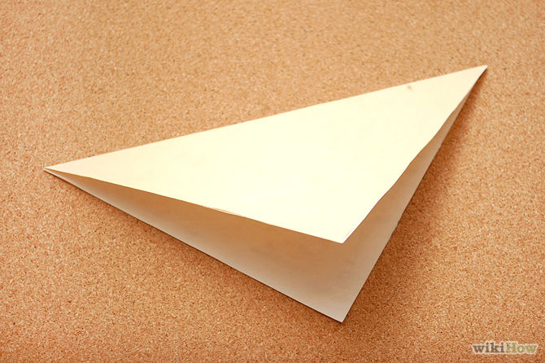
1. Flip the square paper onto the non-colored side. Fold it in half diagonally.
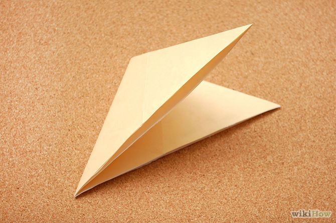
2. Turn it slightly and fold it in half, corner to corner.
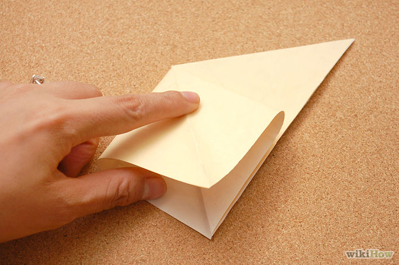
3. Lift the corner up and separate the two layers. Flatten it down.
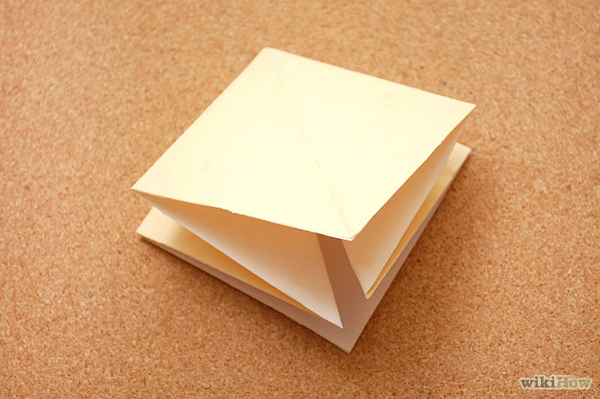
4. Turn the model around and separate the two layers. Flatten it down.
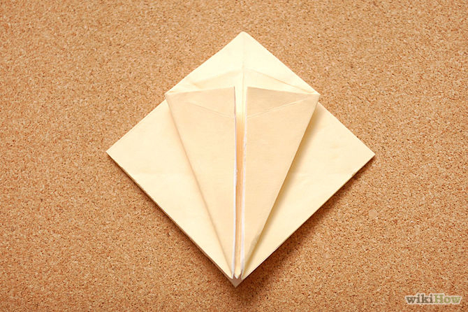
5. Fold the edge to the center line. Fold the other edge to match.
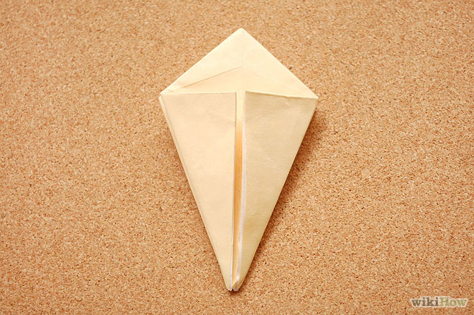
6. Turn the model around and fold the edge to the center line. Fold the other edge to match.
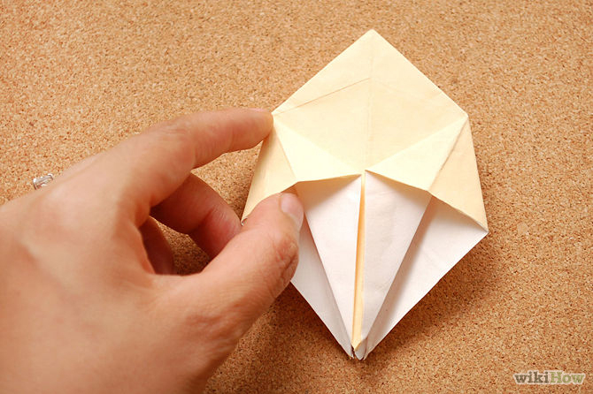
7. Lift the flap up. Separate the paper and squash it flat. Repeat for the other flap. Turn the model over and repeat for those folds.
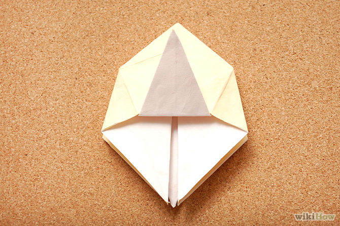
8. Fold the triangle point up. Fold it as far as it will go, but not to the top. Turn the model over and repeat.
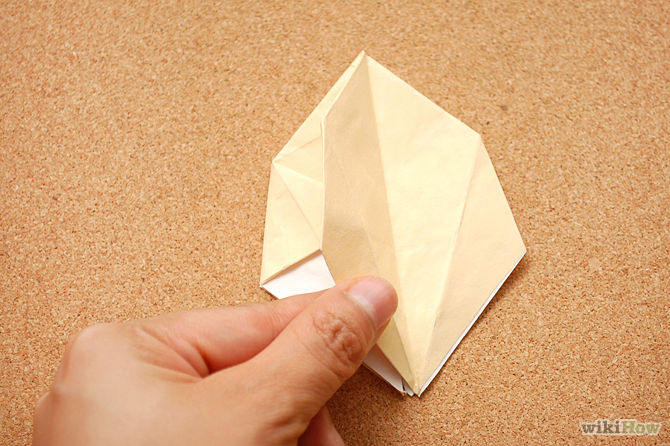
9. Fold the model in half to expose a new side.10. Fold the edge to the center line. Fold the other edge to match.
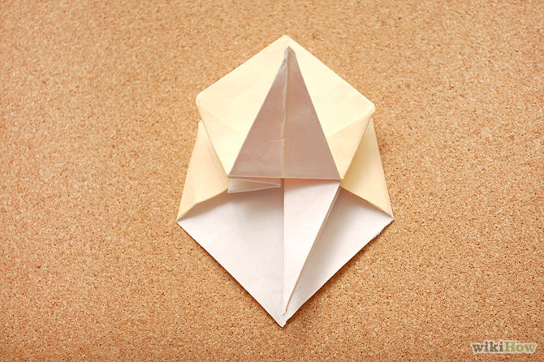
11. Fold the triangle point up. Fold it as far as it will go but not to the top.
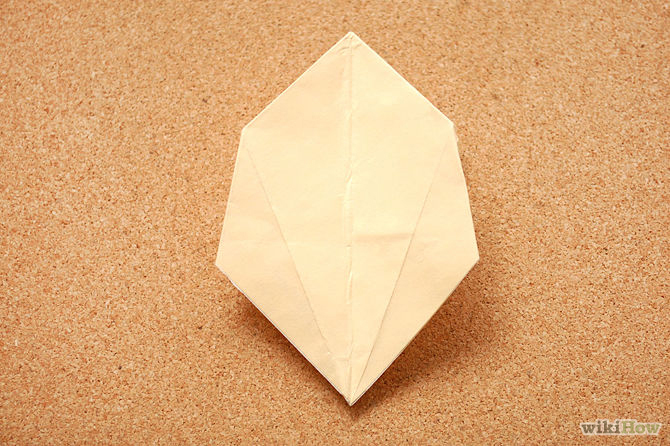
12. Turn the model over. Fold the model in half to expose a new side.
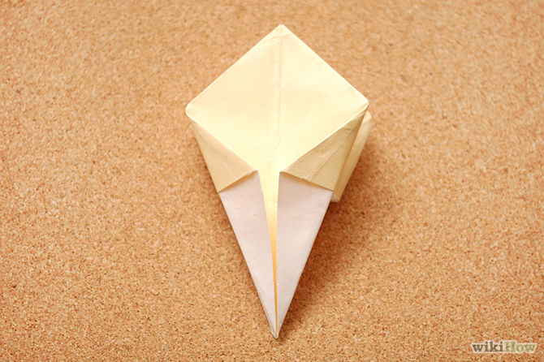
13. Fold the edge to the center line. Fold the other edge to match.
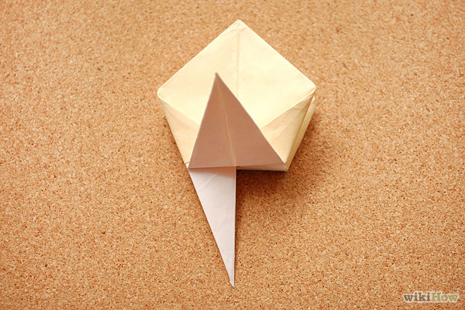
14. Fold the triangle point up. Fold it as far as it will go but not to the top.
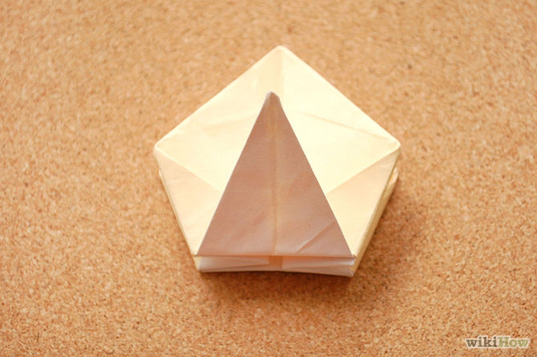
15. Lift the triangle out of the way. Fold the bottom edge up in half and repeat for the other side
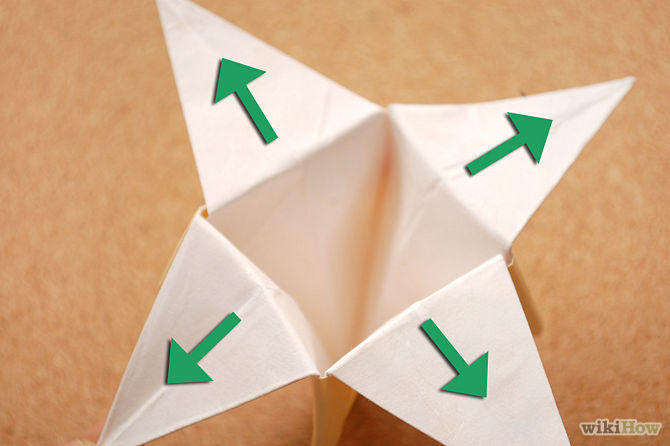
16. Pull the model apart gently from each of the triangle flaps.
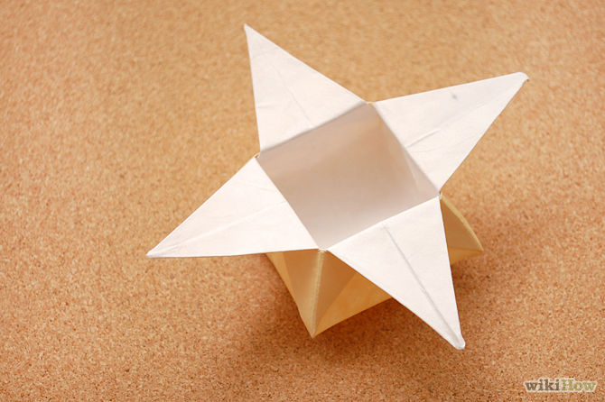
17. Finished. Add a tiny gift if using for gift giving.